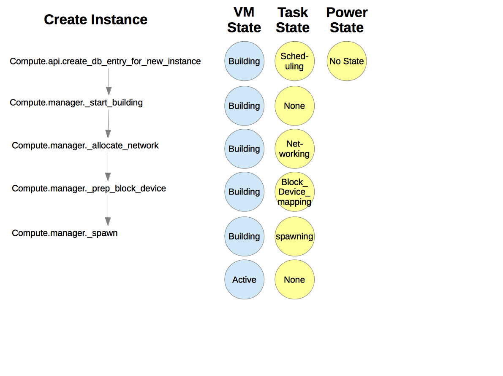

Virtual Machine States and Transitions¶
Preconditions for commands¶
The following diagrams show the required virtual machine (VM) states and task states for various commands issued by the user:
![digraph states {
node [fontsize=10 fontname="Monospace"]
/* states */
building [label="BUILDING"]
active [label="ACTIVE"]
paused [label="PAUSED"]
suspended [label="SUSPENDED"]
stopped [label="STOPPED"]
rescued [label="RESCUED"]
resized [label="RESIZED"]
soft_deleted [label="SOFT_DELETED"]
deleted [label="DELETED"]
error [label="ERROR"]
shelved [label="SHELVED"]
shelved_offloaded [label="SHELVED_OFFLOADED"]
/* apis */
create [shape="rectangle"]
create -> active
create -> error
building -> create
delete [shape="rectangle"]
delete -> deleted
building -> delete
paused -> delete
suspended -> delete
stopped -> delete
rescued -> delete
soft_deleted -> delete
error -> delete
soft_delete [shape="rectangle"]
soft_delete -> soft_deleted
soft_delete -> error
active -> soft_delete
stopped -> soft_delete
restore [shape="rectangle"]
restore -> active
restore -> error
soft_deleted -> restore
pause [shape="rectangle"]
pause -> paused
pause -> error
active -> pause
unpause [shape="rectangle"]
unpause -> active
unpause -> error
paused -> unpause
suspend [shape="rectangle"]
suspend -> suspended
suspend -> error
active -> suspend
resume [shape="rectangle"]
resume -> active
resume -> error
suspended -> resume
start [shape="rectangle"]
start -> active
start -> error
stopped -> start
stop [shape="rectangle"]
stop -> stopped
stop -> error
active -> stop
error -> stop
rescue [shape="rectangle"]
rescue -> rescued
rescue -> error
active -> rescue
stopped -> rescue
error -> rescue
unrescue [shape="rectangle"]
unrescue -> active
rescued -> unrescue
resize [shape="rectangle"]
resize -> resized
resize -> error
active -> resize
stopped -> resize
confirm_resize [shape="rectangle"]
confirm_resize -> active
confirm_resize -> error
resized -> confirm_resize
confirm_resize [shape="rectangle"]
revert_resize -> active
revert_resize -> error
resized -> revert_resize
snapshot [shape="rectangle"]
snapshot -> active
snapshot -> stopped
snapshot -> error
active -> snapshot
stopped -> snapshot
backup [shape="rectangle"]
backup -> active
backup -> stopped
backup -> error
active -> backup
stopped -> backup
rebuild [shape="rectangle"]
rebuild -> active
rebuild -> error
active -> rebuild
stopped -> rebuild
set_admin_password [shape="rectangle"]
set_admin_password -> active
set_admin_password -> error
active -> set_admin_password
reboot [shape="rectangle"]
reboot -> active
reboot -> error
active -> reboot
stopped -> reboot
paused -> reboot
suspended -> reboot
error -> reboot
live_migrate [shape="rectangle"]
live_migrate -> active
live_migrate -> error
active -> live_migrate
shelve [shape="rectangle"]
shelve -> shelved
shelve -> shelved_offloaded
shelve -> error
active -> shelve
stopped -> shelve
paused -> shelve
suspended -> shelve
shelve_offload [shape="rectangle"]
shelve_offload -> shelved_offloaded
shelve_offload -> error
shelved -> shelve_offload
unshelve [shape="rectangle"]
unshelve -> active
unshelve -> error
shelved -> unshelve
shelved_offloaded -> unshelve
}](../_images/graphviz-dd46709819e175b0fbe79f25a7866abfc0bcf5e0.png)
Create instance states¶
The following diagram shows the sequence of VM states, task states, and power states when a new VM instance is created.
